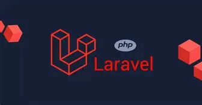
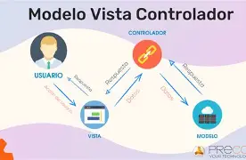

Tutorial de Instalación y Despliegue de Laravel en Windows y Linux
Laboratorio técnico de instalación, resolución de dependencias (PHP 8.5, Composer 2.x) y despliegue del framework Laravel en entornos Windows y Linux. Guías paso a paso con evidencia en vídeo local y en la nube.
¿Qué es Laravel?
Es un framework web de código abierto para PHP concebido bajo el patrón Modelo-Vista-Controlador (MVC). Prioriza la productividad y sintaxis limpia, integrando de forma nativa el motor de plantillas Blade, el ORM Eloquent y la interfaz de consola Artisan.
¿Para qué se utiliza?
Es la plataforma estándar para construir sistemas web empresariales, plataformas SaaS y APIs RESTful desacopladas. Resuelve nativamente la autenticación segura, control de sesiones, manejo asíncrono de colas y transmisión de eventos en red.
Alcance Mundial
PHP respalda más del 75% de los servidores web a nivel global. Dentro de su ecosistema moderno, Laravel es el framework #1 del mundo con más del 40% de cuota de mercado e impulsando más de 1.6 millones de aplicaciones activas.
Matriz Comparativa de Entornos
Verificación Exitosa| Criterio Técnico | Entorno Windows | Entorno Linux (Pop!_OS / Ubuntu) |
|---|---|---|
| Runtime PHP | PHP 8.5.11 (NTS extraído en C:\PHP) |
PHP 8.5.4 (Instalado vía gestor apt) |
| Gestor de Dependencias | Composer 2.10.03 (Instalador oficial) | Composer 2.9.5 (Paquete de sistema) |
| Configuración de Módulos | Manual en php.ini (zip, fileinfo) |
Automática por paquetes modulares apt |
| Servidor de Desarrollo | Artisan en http://127.0.0.1:8000 |
Artisan en http://127.0.0.1:8000 |
Arquitectura Modelo-Vista-Controlador (MVC)
Laravel implementa MVC para asegurar un desacoplamiento estricto entre el manejo de datos, la lógica del servidor y la interfaz que recibe el cliente a través de la red:

Flujo de petición y respuesta desacoplada en Laravel 111. Controlador (Controller)
Captura las peticiones HTTP despachadas por routes/web.php, procesa la entrada del cliente y coordina el flujo de información.
2. Modelo (Model - Eloquent)
Abstrae las entidades de datos y la lógica de negocio, comunicándose eficientemente con la base de datos relacional.
3. Vista (View - Blade)
Compila y renderiza el código HTML dinámico con protección XSS, retornando al cliente una respuesta HTTP 200 OK.